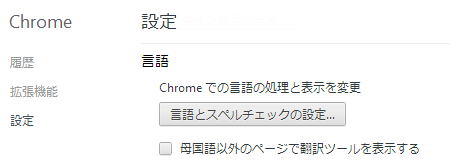

| TOP | weblog | TIPS | Works | リンク | 掲示板 |
| 2012-11-21 Google Chermeの英語→日本語翻訳は中国語翻訳になるときがある 最近はChermeを使っているんですけど、自分のサイトのトップページが英語ページと判定されます。 <HTML xmlns="”http://www.w3.org/1999/xhtml”" dir="”ltr”" lang="”ja”"> は全く効きません。 調べてみると、「ここ」に調査結果がありました。 それぞれの言語の量によって、そのページがどの言語メインで記述されているかを判定しているようです。 トップページは日本語が少ないので「英語」のページと判断されてしまいます。 翻訳してみるとメニューがこうなる。 「axis」が「軸」はわかるが、「備忘録」が「备忘录」って、なぜに中文に訳されるのぉ？ 翻訳できないなら、そのままにしときゃいいじゃん！ Chermeの設定で「母国語以外のページで翻訳ツールを表示する」のチェックを外すと自動翻訳しなくなります。  |